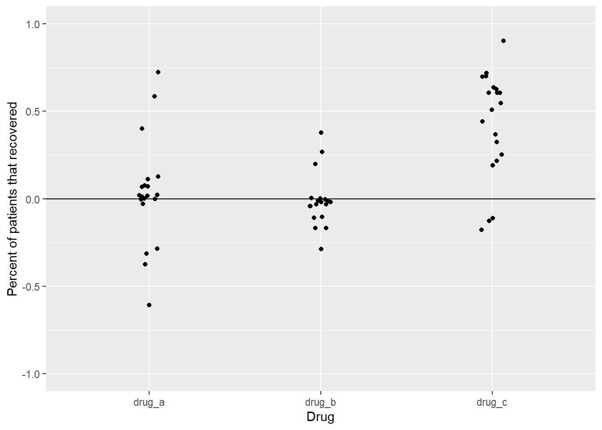
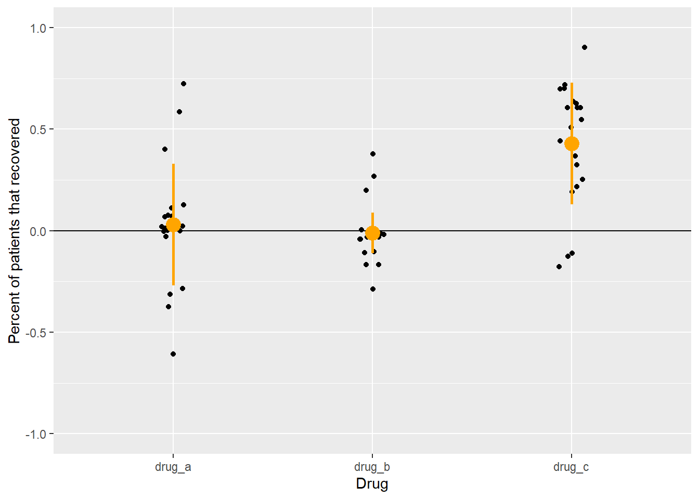
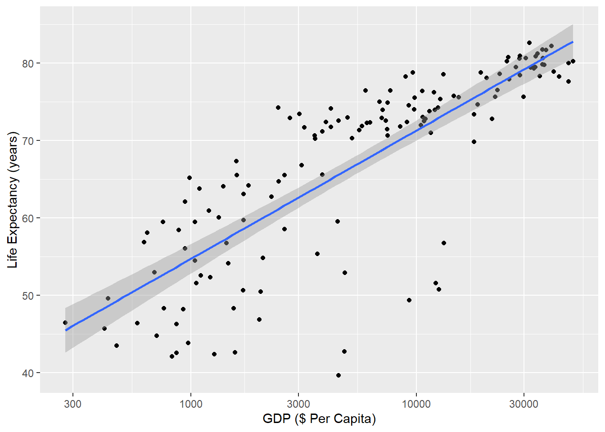
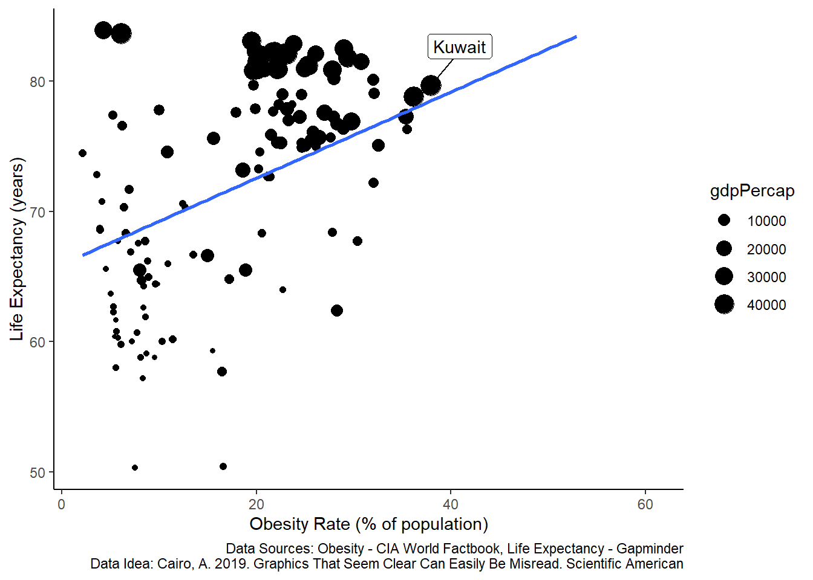
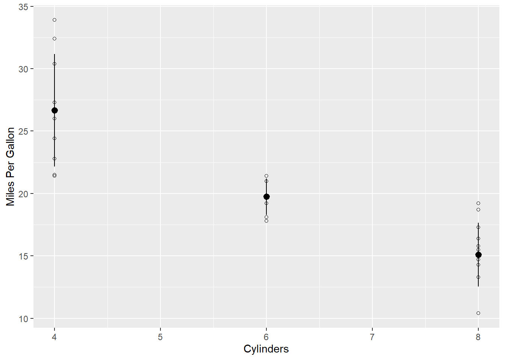

5 Thinking Quantitatively
5.1 Learning Objectives
Understand why we use statistics
Understand basic summary statistics
Understand common pitfalls in statistical inference
5.2 Why Statistics
Statistics is the process of making inferences from data. That’s it. We find that statistics can be daunting for undergraduate students. It was daunting for us as well. The goal of this book is not to teach you how to be a statistician. It is to teach you how to begin working with and understanding data as it pertains to scientific inquiry. The skills you learn here should allow you to read a scientific paper and not have to look up what a standard error is or what a confidence interval is or what the difference is between a median and a mean.
A poorly kept secret in science is that you need a working understanding of statistics whether you use it formally or not. Consider a doctor who needs to prescribe a drug for disease X. There are three drugs on the market for this disease. The drugmakers have provided you with the following graphs showing how good their drugs are at treating this disease.
## Warning: `...` is not empty.
##
## We detected these problematic arguments:
## * `needs_dots`
##
## These dots only exist to allow future extensions and should be empty.
## Did you misspecify an argument?## # A tibble: 6 x 3
## trial drug prop_recover
## <int> <chr> <dbl>
## 1 1 drug_a 1
## 2 1 drug_b 1
## 3 1 drug_c 0.7
## 4 2 drug_a 0.89
## 5 2 drug_b 0.98
## 6 2 drug_c 0.12
Figure 5.1: Proportion of patients that recovered from a disease after taking one of three drugs. Each dot represents the outcome of a single experiment (i.e. trial).
Figure above shows the result of twenty trials of each drug. For each trial, the drug makers calculated the percentage of patients that recovered from the disease after taking the drug.
Which one should the doctor prescribe?
For drugs A and B, several trials showed that 100% of patients that took the drug recovered. Those seem like good choices. For drug C, recoveries were all over the place. In some trials, less than half of the patients recovered after taking the drug. That doesn’t seem good. However, since the doctor took Inquiry and Analysis in Biology as an undergrad, they notice something odd about these data. The drugmakers only report recoveries of people who took the drug. What about people who had the same disease but didn’t take a drug? In other words, what about the controls? The doctor asks for this information. Let’s look at the same graph, but now with the data for controls added.
## Warning: `...` is not empty.
##
## We detected these problematic arguments:
## * `needs_dots`
##
## These dots only exist to allow future extensions and should be empty.
## Did you misspecify an argument?## # A tibble: 6 x 4
## trial drug treatment prop_recover
## <int> <chr> <chr> <dbl>
## 1 1 drug_a treatment 1
## 2 1 drug_b treatment 1
## 3 1 drug_c treatment 0.7
## 4 1 drug_a control 0.41
## 5 1 drug_b control 1
## 6 1 drug_c control 0
In the figure above, the black dots are the same as before. The gray dots show the percent of people who recovered without taking the drug. Does this information change your perception of the benefits of taking either drug? In the first graph, it seemed obvious that drugs A and B were better than drug C, because most people recovered with those drugs.
Adding the control data tells a different story. While it is true that most people recovered when taking drugs A and B, they also recovered without taking those drugs. For drug C, only ~25 to 75 percent of people recovered when taking it, but that percentage appears much higher than the percentage of people that recovered without taking the drug. In some trials, almost no one recovered without the drug. This complicates the decision of which drug to choose.
Because our doctor took Inquiry and Analysis in Biology and later took biostatistics, they ask for further information. Instead of just looking at the data for each group, they want something more informative. For each trial, they subtract the percent that recovered when taking the drug from the percent that recovered when not taking the drug. Then they plot it. It looks like this.
## Warning: `...` is not empty.
##
## We detected these problematic arguments:
## * `needs_dots`
##
## These dots only exist to allow future extensions and should be empty.
## Did you misspecify an argument?## # A tibble: 6 x 5
## trial drug treatment control difference
## <int> <chr> <dbl> <dbl> <dbl>
## 1 1 drug_a 1 0.41 0.59
## 2 2 drug_a 0.89 0.81 0.08
## 3 3 drug_a 0.96 0.56 0.4
## 4 4 drug_a 0.62 0.99 -0.37
## 5 5 drug_a 1 0.99 0.01
## 6 6 drug_a 0.99 0.27 0.72
Now we see a different story than the figure we started with. By displaying the differences in recover, instead of the raw recovery rates, it now appears that drug C is a clear winner. In all but three trials, recovery rates were higher for people that took the drug compared to those that didn’t.
So far, we have only plotted the data. We haven’t quantified anything yet, but by plotting the data and being self-critical of the ways in which we might be fooling ourselves, we have practiced quantitative reasoning.
Plotting data as among the most important steps in any project. Plotting (aka making graphs, data visualization) does several things. 1) It reveals any obvious problems in data entry. 2) It shows obvious trends in the data. 3) It crystalizes the experimental design. This last step is crucial. Deciding what to put on the x-axis versus the y-axis, how to label those axes, what range to put on the y-axis, what groups to label in the figure legend…these are just some of the choices you’ll make when plotting data. Students often do this step last, hoping to add a graph at the end to complete an assignment. Don’t do that. Plot early and often, even before you have data. If you know what the axes should be, and which groups will go side-by-side (like the gray and black dots in Figure X), then you have already crystalized nearly everything that you will later write about in the rest of your paper. We call this process Figures First, and give examples in later chapters.
5.3 Summary Statistics
Now that we’ve plotted our results, the next step is to describe them using summary statistics. Summary statistics are numbers that describe some aspect of the data. They include things like the mean, median, standard deviation, quantiles, minimum, and maximum. In combination with plotting, summary statistics are critical for communicating science. Summary statistics also provide a guide for how to verbally describe your results to your professor, colleague, friend, or whoever is trying to understand your science.
You should aim to provide at least the following summary statistics for every important result. They are defined below along with the R function that calculates them in italics.
Mean The central tendency of your data. calculated as the sum of the value of all data in a group divided by the number of data points in that group. mean()
Standard Deviation The spread of your data. Let’s say you have 10 data points with a mean of 2 and a standard deviation of 0.5. Even though the mean is 2, very few individual data points will be exactly 2. In fact, none of them may be exactly 2. Instead, the data points will “deviate” from the mean. A standard deviation of 0.5 means that the average deviation from the mean is 0.5 absolute units from 2. We usually write this with +/- symbols (2 +/- 0.5), meaning that a typical data point might be anywhere from 2 + 0.5 to 2 - 0.5, that is 2.5 to 1.5. sd()
Minimum The smallest value. min()
Maximum The largest value. max()
The code below will generate the data set used in Figure 3 above called drug_data - just copy it and run it. Don’t worry about interpreting it for now.
library(tidyverse)
set.seed(222)
drug_data <- tibble(drug_a_treatment = rbeta(20, 2,.25),
drug_b_treatment = rbeta(20, 2, 0.3),
drug_c_treatment = rbeta(20, 2, 2),
drug_a_control = rbeta(20, 1.8, 0.25),
drug_b_control = rbeta(20, 1.8, 0.25),
drug_c_control = rbeta(20, 0.2, 1)) %>%
mutate(trial = 1:nrow(.)) %>%
pivot_longer(cols = -trial, names_to = "drug", values_to = "y") %>%
separate(drug, c("temp", "drug", "treatment")) %>%
mutate(drug = paste0(temp, "_", drug)) %>%
select(-temp) %>%
pivot_wider(names_from = treatment, values_from = y) %>%
mutate(difference = treatment - control,
difference = round(difference, 2),
treatment = round(treatment, 2),
control = round(control, 2)) %>%
arrange(drug)Once we have a data set, we use the group_by() and summarize() functions to generate the summary statistics.
drug_data %>%
group_by(drug) %>%
summarize(mean = mean(difference),
sd = sd(difference),
min = min(difference),
max = max(difference))## `summarise()` ungrouping output (override with `.groups` argument)## Warning: `...` is not empty.
##
## We detected these problematic arguments:
## * `needs_dots`
##
## These dots only exist to allow future extensions and should be empty.
## Did you misspecify an argument?## # A tibble: 3 x 5
## drug mean sd min max
## <chr> <dbl> <dbl> <dbl> <dbl>
## 1 drug_a 0.0315 0.303 -0.61 0.72
## 2 drug_b -0.00950 0.150 -0.290 0.38
## 3 drug_c 0.428 0.306 -0.18 0.9That’s a lot of decimal places! Let’s clean it up a bit before moving on. Compare the code below to the code above. Can you see how we shortened the decimal places? Why did we keep two decimal places for the mean, but only 1 decimal place for everything else?
summary_stats <- drug_data %>%
group_by(drug) %>%
summarize(mean = round(mean(difference),2),
sd = round(sd(difference),1),
min = round(min(difference),1),
max = round(max(difference),1)) ## `summarise()` ungrouping output (override with `.groups` argument)## Warning: `...` is not empty.
##
## We detected these problematic arguments:
## * `needs_dots`
##
## These dots only exist to allow future extensions and should be empty.
## Did you misspecify an argument?## # A tibble: 3 x 5
## drug mean sd min max
## <chr> <dbl> <dbl> <dbl> <dbl>
## 1 drug_a 0.03 0.3 -0.6 0.7
## 2 drug_b -0.01 0.1 -0.3 0.4
## 3 drug_c 0.43 0.3 -0.2 0.9Now we’ll add the mean and sd to the plot. Can you see how it is added in the code below?
ggplot(drug_data, aes(x = drug, y = difference)) +
geom_point(position = position_jitter(width = 0.065)) +
labs(y = "Percent of patients that recovered",
x = "Drug") +
ylim(-1,1) +
geom_hline(yintercept = 0) +
geom_pointrange(data = summary_stats, aes(x = drug, y = mean, ymin = mean - sd, ymax = mean + sd), size = 1, color = "orange")
This looks pretty close to a finished product now. It has lots of information in the plot, including the raw data, the mean, and the standard deviation. By combining the summary statistics and the plot, we are ready to write a paragraph about this result.
Across 20 trials, recovery rates were 0.43 +/- 0.3 points higher for groups that took drug C versus that took a placebo. Recovery ranged from -0.2 to 0.9. In comparison, recovery rates for drug A were only 0.03 +/- 0.3 points higher than placebo controls, and recovery rates for drug B were 0.01 +/- 0.1 points worse than placebo controls. However, direct comparison of these drugs is complicated by the fact that raw rates of recovery were highest for drugs A and B, in which nearly all patients recovered in both treatment and control groups. In contrast, recovery rates for drug C were ~50% in the treatment group, but only ~10% in the control. This suggest the potential that the trials were conducted on groups with different underlying probabilities of recovery.
5.4 Don’t forget that Quantitative Thinking includes “thinking”
A statistical model alone will not answer your scientific question. The work flow presented above is not a formula for success in every case. Each problem you attempt to solve as a scientist is unique and will require you to make judgment calls. Statistics can help us to justify those judgments, making our decisions less susceptible to personal bias, but they cannot eliminate subjectivity. The point of Quantitative Thinking is not to replace critical thought with computer generated outputs. It is to use the tools of statistics and experimental design to prevent us from fooling ourselves. As Richard Feynman said: “The first principal [of science] is to not fool yourself, and you are the easiest person to fool.”
5.5 Common Pitfalls in Statistical Inference
Here are some easy ways to fool yourself in science and quantitative thinking.
- Spurious correlations
Assuming that correlations reflect causation. Forgetting about hidden variables
The plot below is from real data. How do you interpret this result?
## Loading required package: rstan## Loading required package: StanHeaders## rstan (Version 2.21.2, GitRev: 2e1f913d3ca3)## For execution on a local, multicore CPU with excess RAM we recommend calling
## options(mc.cores = parallel::detectCores()).
## To avoid recompilation of unchanged Stan programs, we recommend calling
## rstan_options(auto_write = TRUE)## Do not specify '-march=native' in 'LOCAL_CPPFLAGS' or a Makevars file##
## Attaching package: 'rstan'## The following object is masked from 'package:tidyr':
##
## extract## Loading required package: parallel## Loading required package: dagitty## rethinking (Version 2.01)##
## Attaching package: 'rethinking'## The following object is masked from 'package:purrr':
##
## map## The following object is masked from 'package:stats':
##
## rstudent## `geom_smooth()` using formula 'y ~ x'## Warning: Removed 36 rows containing missing values
## (geom_text).
The figure shows a clear positive correlation between the divorce rate and the number of Waffle Houses (McElreath 2015). In this case, it is obvious (hopefully) that Waffle Houses are probably not causing divorces. What’s going on? The states that are labeled are all in the South, where Waffle Houses are common. People also happen to get married earlier in the South, which helps to explain the higher than average divorce rates there.
Here’s another less obvious example.
library(gapminder)
data(gapminder)
gapminder %>%
filter(year == 2007) %>%
ggplot(aes(x = gdpPercap, y = lifeExp)) +
geom_point() +
scale_x_log10() +
geom_smooth(method = "lm") +
labs(x = "GDP ($ Per Capita)",
y = "Life Expectancy (years)")## `geom_smooth()` using formula 'y ~ x'
The figure shows a positive relationship between a country’s gross domestic product (GDP) and its life expectancy in 2007. Each dot is a country. In our experience, this correlation is a common one for students to study. They often interpret the result as confirming a benefit of economic activity with how long people live, and conclude that countries can improve life-expectancy simply by improving economic activity.
But this represents a similar fallacy as the Waffle House-Divorce example. An easy way to see this is to check death certificates. If we did that (we didn’t, but we think we’re safe here), we would probably not find a cause of death that says “Died due to low GDP”. Just like Waffle Houses are associated with “Southerness” and “Southerness” is associated with early age at marriage and early age at marriage leads to higher divorce rates, GDP is associated with its own confounding variable of health care infrastructure. That is itself a large and difficult-to-define metric, but it is closer to explaining the positive correlation between GDP and life expectancy.
It is certainly true that countries with higher GDP’s tend to also have better health outcomes because they have better health infrastructure. The trick is to think about the actual steps that have to happen for GDP to translate to longer life-expectancy. Each country will make individual choices along those steps, and each choice has the potential to sever the link between GDP and efficient health spending. There is nothing wrong with studying the statistical relationship between GDP and life expectancy. Just be careful in assuming that simply improving GDP will automatically improve life-expectancy.
5.5.0.1 Preventing mistakes with spurious correlations
Use similar quantitative reasoning as the doctor did with the drug company results. In essence, ask how an initial result might be missing something crucial (like a control or a confounder). This is especially important if the initial result is something you were expecting to see. If you were expecting to see a positive correlation between x and y and you found it, that’s great. But don’t let that result prevent you from thinking critically about other ways that your result could arise.
- Negative Results as Failures
Assuming that your study “failed” because it did not support your hypothesis
You form a hypothesis, expect an outcome, collect data, and find…nothing. No relationship. Nada.
What do you conclude from this?
A common mistake is to declare a “failed” experiment. Some students try to start a new project from scratch, just so they can report a “positive” outcome. Don’t do that!
An unwritten rule of science is that our failures often lead to the most interesting research. After all, you probably did a study thinking you knew the answer. When it fails, it means that something that most scientists might predict is not quite right. Consider geocentrism. When scientists in the 1600’s found that their calculations of the planets and stars were wrong, that was not a failure (well, it was a failure of the mathematical models themselves, but not of the scientific endeavor writ large). Instead, those bad predictions eventually revealed that something that most humans believed (earth at the center of the universe) was wrong. Being wrong did not mean that those scientists were bad scientists. It was perfectly reasonable to expect that the earth was stationary and everything else moved around it.
In my own research (Wesner’s), a failure lead to a new area of study. We wanted to know how metal contamination from streams would affect insects that lived in those streams. We knew that young insects had high metal concentrations and assumed that the adults would too. We even wrote several grants that made that assumption, asking for money to study how those metals in adult insects would impact birds that fed on them.
So we collected some adults from contaminated streams and measured the concentration of metals in them. We were shocked. Even though they came from contaminated streams and the larvae in those streams had high metal concentrations, the adults did not. They looked fine. We were wrong. There did not seem to be any risk of metal contamination to birds.
This was embarrassing, but it also lead to a different line of research. We read the literature and conducted experiments. We determined that lots of contaminants are lost during metamorphosis. But during that loss, many insects also die. It’s too stressful. So the main risk of metals that we studied was not that metals would get into birds and prevent their reproduction. The main risk was that metals would prevent insects from emerging altogether, thereby leading to less food for birds.
Without this initial “failure”, we never would have discovered the actual links between metal contamination in streams and risks to riparian birds.
5.5.0.2 Preventing mistakes with negative results
Treat them as an opportunity to learn more. If your hypothesis was not supported, explore the reasons why. Do you predictor and response variables actually measure the quantities of your hypothesis or are they a proxy? If they’re a proxy, maybe they don’t measure what you think they do. Maybe the negative results is robust and it challenges conventional wisdom. That’s exciting! What are the implications of a hypothesis that didn’t pan out? Explore those and suggest how future scientists should proceed now that we know that a given hypothesis isn’t always supported.
- Ecological Fallacy
Using aggregate data to infer something about individuals
Extreme obesity is a global public health concern that is defined as a body mass index of 40 kg/m2 or more. Individuals in this category have increased rates of mortality, often due to increased rates of heart disease, cancer, stroke and other ailments (???).
Let’s visualize the relationship between obesity and life-expectancy across countries. In the plot below, each dot is a different country. The line represents a linear regression between the two variables.
## Parsed with column specification:
## cols(
## country = col_character(),
## obesity_rate_perc_pop = col_double()
## )## Parsed with column specification:
## cols(
## .default = col_double(),
## country = col_character()
## )## See spec(...) for full column specifications.## Joining, by = "country"## `geom_smooth()` using formula 'y ~ x'## Warning: Removed 22 rows containing non-finite values
## (stat_smooth).## Warning: Removed 22 rows containing missing values
## (geom_point).## Warning: Removed 191 rows containing missing values
## (geom_label_repel).
Is this what you expected? This seems like a paradox. Decades of studies clearly show that extreme obesity is linked with poor health outcomes and increased mortality. The plot above appears to contradict this. Countries with a higher percentage of obese people also tend to have higher life expectancy.
This is an example of the ecological fallacy, which states that we cannot use aggregate data to infer something about individuals. For example, Kuwait has a high obesity rate of ~38% and a high life-expectancy of ~79 years. But those numbers represent averages of about 4 million individuals. If we were to assess a sample of individuals within Kuwait, then we would expect the pattern that we initially hypothesized - at the individual level, extreme obesity is negatively associated with life-expectancy, but at the country-level the pattern is reversed.
As you might expect by now, there are also other reasons to explain these associations, such as hidden variables. For example, look at the plot again, but now with information on GDP per capita.
## Parsed with column specification:
## cols(
## country = col_character(),
## obesity_rate_perc_pop = col_double()
## )life_exp <- read_csv("data/life_expectancy_years.csv") %>%
pivot_longer(cols = -country, names_to = "year", values_to = "life_exp")## Parsed with column specification:
## cols(
## .default = col_double(),
## country = col_character()
## )## See spec(...) for full column specifications.obesity_life_exp <- obesity_CIA %>% left_join(life_exp %>% filter(year == 2016)) %>%
mutate(label = case_when(country == "Kuwait" ~ "Kuwait")) %>%
left_join(gapminder %>% filter(year == max(year)) %>% select(country, gdpPercap))## Joining, by = "country"## Joining, by = "country"obesity_life_exp %>%
ggplot(aes(x = obesity_rate_perc_pop, y = life_exp)) +
geom_point(aes(size = gdpPercap)) +
geom_label_repel(aes(label = label), nudge_x = 3, nudge_y = 3) +
geom_smooth(method = "lm", se = F) +
theme_classic() +
labs(x = "Obesity Rate (% of population)",
y = "Life Expectancy (years)",
caption = "Data Sources: Obesity - CIA World Factbook, Life Expectancy - Gapminder
Data Idea: Cairo, A. 2019. Graphics That Seem Clear Can Easily Be Misread. Scientific American")## `geom_smooth()` using formula 'y ~ x'## Warning: Removed 22 rows containing non-finite values
## (stat_smooth).## Warning: Removed 64 rows containing missing values
## (geom_point).## Warning: Removed 191 rows containing missing values
## (geom_label_repel).
This is the same data, but now a third variable is presented, showing GDP per capita (in US 2007 Dollars). The scatter of the dots is non-random in the sense that countries with large GDP tend to be clustered in areas of both high life-expectancy and higher obesity rates.
5.5.0.3 Preventing the ecological fallacy mistake
Relate your hypotheses and explanations to the level of your data. For example:
What We Initially Wanted to Study How does obesity affect survival?
What We Actually Studied What is the correlation between obesity rates and life expectancy among countries?
Data Level Countries
Faulty Description Individuals with extreme obesity live longer
Correct Description At the country level, there is a positive correlation between obesity rates and life expectancy.